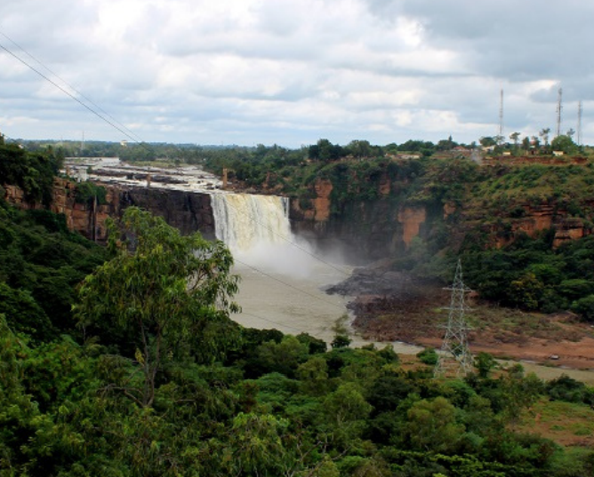

Gracefully flowing Ghataprabha river, after winding through a long
route gushes down from 171 ft(52 metres) over sandstone cliff and
rocky boulders to form beautiful looking Gokak falls. Besides this,
the humongous waterfall has a flood width of 170 metres and its
resemblance in many ways are similar to that of Niagara falls in the
USA. Hence, It is also popularly known as “ Mini Niagara” by the
locals. Gokak got its name from the Goki river that runs in this
region

History about the Mini Niagara
Gracefully flowing Ghataprabha river,
after winding through a long route gushes down from 171 ft(52 metres)
over sandstone cliff and rocky boulders to form beautiful looking Gokak falls.
Besides this, the humongous waterfall has a flood width of 170 metres and its
resemblance in many ways are similar to that of Niagara falls in the USA
Hence, It is also popularly known as “ Mini Niagara” by the locals. Gokak got its name
from the Goki river that runs in this region.Shortly before the falls, a 201 meter long
suspension bridge was built to facilitate traffic on the river banks
Walk on this bridge is a thrill.
There is also a beautiful garden near this waterfall.
Gokak Waterfalls in El Sheep One of the major tourist attractions in Karnataka,
thousands of people come here to see this waterfall.